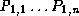
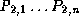
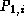
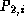
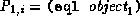
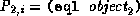
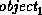
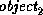

Common Lisp the Language, 2nd Edition


Next: Congruent Lambda-Lists for
Up: Generic Functions and
Previous: Introduction to Methods

Two
methods are said to agree with each other on parameter specializers
and qualifiers if the following conditions hold:
- Both methods have the same number of required parameters.
Suppose the parameter specializers of the two methods are

and .
- For each 1 <= i <= n,
 agrees with .
The parameter specializer
agrees with if
and are the same class or if
,
, and
(eql  ).
Otherwise and do not agree.
- The lists of qualifiers of both methods contain the same
non-nil atoms in the same order. That is, the lists are equal.

AI.Repository@cs.cmu.edu